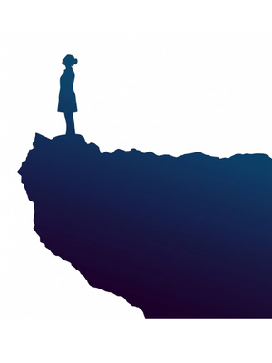

A framework for
everything you've been
wondering about.
Sah Astitva Answers is a proposal — for understanding
coexistence, and for living in accordance with it.
It begins where every honest human inquiry begins:
with a
question.

The gap between where we are
and where we could be..
Core topics
Essence of every topic.
Each topic explored in the Sah Astitva Answers Workshop — the core question and what the framework says.
The inner life
What is happiness — and why does it keep slipping away?
Human beings are naturally सुखधर्मी — happiness is not something to be achieved, it is the innate state of a conscious self in resolution. What blocks it is not circumstance, but inner contradiction. Four states — happiness, peace, contentment, and bliss — are the precise outcomes of harmony within one's own consciousness. The question is not how to get happiness, but what lack of understanding is preventing it.
Where does the mind exist — and how does it actually work?
The mind (मन) is not the brain. It is a faculty of the conscious self — one of five: perception, intellect, psyche, intuition, and soul. In a state of delusion, the mind acts as master, chasing sensory gratification. In an awakened state, it becomes a regulated instrument guided by deeper understanding. The key to relationships, purpose, and happiness lies in understanding this structure.
Are your feelings happening to you — or coming from within you?
In a deluded state, emotions are reactive — triggered by external events and sensory circumstances. In an awakened state, feelings originate from understanding — stable values like trust, respect, and affection, rather than volatile reactions. Mastery over the inner world is the harmony of the self's own faculties, where the deeper intellect guides the mind rather than the other way around.
Why are desires endless — and what are they really pointing toward?
Desires originate in the चित्त — the faculty of imagination within consciousness. In delusion, the चित्त creates images of what it believes will bring pleasure, based on sensory memory and borrowed social ideas. In awakening, desire becomes singular and aligned: the natural human longing for resolution and coexistence. The randomness of desire is replaced by a clear, fulfilling purpose.
What is the ego — and where does it come from?
Ego (अहंकार) is the state of the intellect when it is disconnected from the soul's direct experience of reality. It operates on borrowed beliefs — about identity, superiority, possession — that are not aligned with what is actually true. These unexamined assumptions create conflict within and with others. The journey of awakening is the gradual dissolution of these borrowed identities, replaced by direct understanding.
Why does motivation from outside always fade?
External motivation is temporary because it has no root in understanding. Permanent inspiration arises when a human being has clarity of purpose — when the true goal of awakening and coexistence is understood. Actions then flow from within. The source of all inspired action in an awakened human is the experience of knowledge itself.
Is it laziness — or the absence of a real reason to act?
The conscious self is inherently active. When inaction persists despite knowing a task is right and useful, it is a signal — not a character flaw. Work disconnected from purpose, driven by fear or compulsion, produces no inner inspiration. When a human being has a clear and meaningful goal, the energy to act arises naturally.
Why do we keep comparing ourselves — and how does it end?
Feelings of inferiority and superiority both stem from identifying oneself with variable, temporary attributes — appearance, wealth, position. Since these can always be compared, the loop of over-evaluation and under-evaluation never ends. The way out is to shift identity to the conscious self — the जीवन — which is the same in every human being in its potential for understanding and happiness. Comparison loses its basis entirely.
Relationships & family
What is love — really?
True love (प्रेम) is the pinnacle of understanding — the complete acceptance that arises when one sees oneself in all others, rooted in the realisation of coexistence. It begins with affection (स्नेह) — the feeling of being non-opposed to another — and is the combined expression of compassion, grace, and mercy. It is a stable state, not a temporary wave dependent on another's behaviour.
Why are relationships so exhausting to maintain?
Exhaustion in relationships comes from trying to manage undefined and conflicting expectations. Relationships are meant to be recognised and fulfilled — not managed. Every relationship carries inherent, universal values: trust, respect, gratitude, affection. These are the natural expectations of every conscious self. When they are understood and lived, fulfillment becomes effortless.
What is the real purpose of marriage?
Marriage is a pivotal relationship for mutual development toward a shared goal: awakening. The ultimate expression of marriage is "one mind and two bodies" — a harmony so deep that two individuals act as a single, resolved unit. This is achieved through mutual fulfillment based on clear values. It is a relationship where each person helps the other resolve their inner contradictions.
What is the highest purpose of being a parent?
The greatest duty of a parent is to provide an environment where a child develops right understanding — not just skills for a career. A child learns from the being of the parent, not from their instructions. The greatest gift a parent can give is their own resolved state — their own clarity and fearlessness.
Suffering & wellbeing
Where does suffering actually come from?
While external events trigger pain, the root of all suffering is internal — the state of contradiction within one's own consciousness. A person in delusion is at war with themselves: the mind wanting one thing, the intellect knowing another. An awakened person, whose inner faculties are in harmony, remains stable even in difficult situations. The work is within.
What is depression and anxiety, at the root?
Depression and anxiety are the outcomes of a life lived in delusion — unresolved contradictions, lack of clarity about purpose, and constant inner conflict between desire and reality. They are powerful signals that one's way of living and believing is out of alignment with what is real. The solution addresses the root: the absence of resolution (समाधान) within consciousness.
What is the difference between wealth and prosperity?
Wealth is the accumulation of material things. Prosperity is a feeling — the state of having more than is required for one's identified physical needs. Physical needs are limited and can be known. A person with ten crores can feel deprived while a person with far less feels prosperous — because prosperity is a state of understanding, not a number.
Existence & philosophy
What is consciousness — and who am 'I'?
You are not just the body. You are the जीवन — an eternal, self-organised conscious unit that uses the body as its instrument. The जीवन is the one that experiences, thinks, desires, and understands. The human journey is one of consciousness development — from survival to human resolution to the experience of coexistence.
What is spirituality — beyond rituals and renunciation?
Spirituality is the process of understanding existence as it is — a direct engagement with reality. It involves understanding the self, the whole of existence, and how to live in harmony with it. The journey is from illusion to awakening, lived fully within family and society. True spirituality resolves inner conflict so one can live with fulfillment and contribute to universal order.
What is truth — and how is it known?
Truth is not a belief system or a statement. It is reality as it is. The ultimate truth is coexistence (सह-अस्तित्व) — all of nature eternally submerged and energised within an all-pervading reality. The goal is to move from belief (मान्यता) to knowledge (ज्ञान) and finally to direct experience (अनुभव).
What is the nature of God — beyond belief and prayer?
What is called God is the all-pervading, omnipresent reality (व्यापक वस्तु) in which all of nature is submerged, energised, and regulated. Rather than praying to an entity for intervention, the invitation is to understand this universal order and align one's own life with it — because this alignment is what produces harmony and fulfillment.
What is the universal dharma of being human?
The dharma of any entity is its intrinsic, inseparable nature. The dharma of a human being is to live in a state of continuous happiness — not as a belief, but as a natural fact. This universal human dharma — seeking happiness through right understanding — is common to all people, irrespective of the organised religion they follow.
What is liberation — and where is it found?
Liberation is freedom from illusion (भ्रम मुक्ति) — not freedom from the world. The bondage is one's own ignorance and the inner contradictions it creates. A liberated person lives fully within family and society, acting from resolution and harmony. Moksha is the state of being fully awakened while living this very life.
What actually carries forward — across lives?
The conscious self (जीवन) is eternal. The body is temporary. What carries forward is the state of the जीवन — its accumulated understanding and unresolved illusions. The most critical task is to resolve one's illusions and develop right understanding in this life. The key to a better future life is to make this present life fully understood and resolved.
Society & the world
Is lasting world peace actually possible?
The war outside is a large-scale projection of the war within every human being. Conflict arises from deluded consciousness operating from fear and a belief in separate, competing identities. A resolved human being lives in coexistence — they see the fundamental oneness of the entire human race and the world as a single, undivided family. War becomes an absurdity.
Why do humans keep dividing — and what resolves it?
Social conflict arises from identifying with differences — caste, religion, class, ideology — that are temporary and superficial. The human race is one (मानव जाति एक). When a human being elevates from community consciousness to human consciousness, the basis for "us vs. them" dissolves — not by ignoring differences, but by recognising a shared and fundamental oneness.
Is climate change an environmental problem — or a human one?
The environmental crisis is the direct result of a deluded relationship with nature: the belief that happiness comes from unlimited consumption, and the sense of separation from the natural world. An awakened human lives with the understanding of prosperity — having enough — and sees the health of the planet as inseparable from their own.